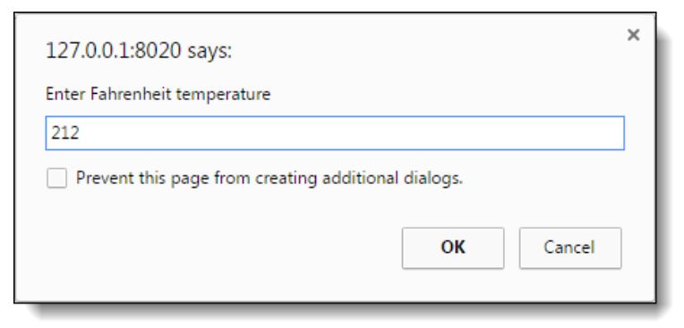
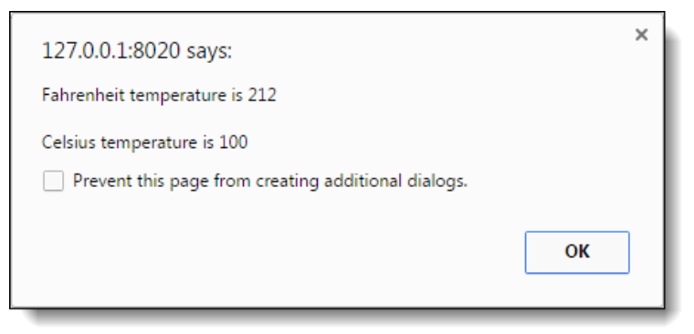

In this exercise, you’ll create an application that converts Fahrenheit temperatures to Celsius temperatures by using the prompt() and alert() methods.
The prompt dialog box should look like this:

The alert dialog box should look like this:

To convert Fahrenheit to Celsius, first subtract 32 from the Fahrenheit temperature. Then, multiply that result by 5/9.
1. Open this file:
Assign01ch02\ch02\convert_temps.html
2. Review the script element in the head section and note that it’s empty. You’ll write the code for this application within this element.
3. Develop this application
4. Remember to comment your code
5. Complete before class on Thursday, and be prepared to show it in class